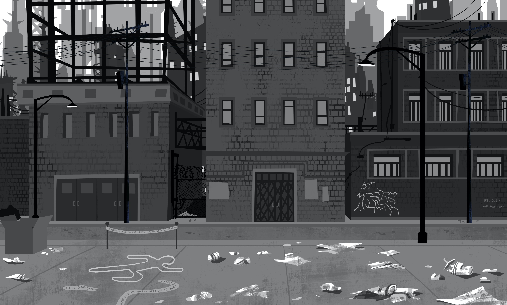

O jogo retratado a seguir trata-se da icônica luta entre um dos maiores heróis dos quadrinhos e seu arqui-inimigo, vs Coringa. Com uma mecânica de luta simples, constituída de um golpe para cada personagem, os jogadores escolhem se preferem lutar com o Batman, contralando o personagem através das teclas A e D para mover-se para a esquerda e direita e a tecla E para socar. Ou o coringa, controlado pelas cetas do teclado e atacando ao apertar a letra L. A principal diferença no funcionamento dos personagens é que o Batman possui um golpe 150% mais forte que o do Coringa, entretanto, o Coringa possui um alcance de ataque maior.
Batman, também conhecido pelas alcunhas Homem-Morcego, Cavaleiro das Trevas, Cruzado Encapuzado e Maior Detetive do Mundo, é uma personagem fictícia e super-herói da editora norte-americana DC Comics, criado pelo escritor Bill Finger a partir dos esboços do desenhista Bob Kane, aparecendo pela primeira vez na revista Detective Comics #27 (maio de 1939) com o nome "Bat-Man". A identidade secreta do Batman é Bruce Wayne, um bilionário americano, playboy, magnata de negócios, filantropo e dono da corporação Wayne Enterprises. Depois de testemunhar o assassinato dos seus pais enquanto criança, Wayne jurou vingança com um ideal de justiça contra os criminosos. Wayne, então, treina física e intelectualmente e cria uma persona inspirada no morcego para combater o crime. Batman opera na cidade fictícia Gotham, sendo ajudado por seu mordomo Alfred Pennyworth, o comissário de polícia Jim Gordon e diversos aliados vigilantes, sendo Robin seu parceiro mais recorrente. Ao contrário da maioria dos super-heróis, Batman não tem superpoderes; assim, na sua guerra contra o crime, utiliza seu intelecto de gênio, sua perícia em artes marciais e sua destreza física — bem como sua riqueza, que lhe garante um arsenal de última geração. Uma grande variedade de vilões compõe a galeria de inimigos do Batman, incluindo o Coringa, seu nêmesis.
O Joker (no Brasil, também conhecido como Coringa) é um supervilão fictício que aparece nos livros de histórias em quadrinhos norte-americanos publicados pela editora estadunidense DC Comics. Foi criado por Jerry Robinson, Bill Finger e Bob Kane e apareceu pela primeira vez em Batman #1 (abril de 1940). Parcialmente inspirado em Gwynplaine, personagem interpretado por Conrad Veidt, no filme O Homem Que Ri (1928), os créditos para a criação do Coringa são disputados; Kane e Robinson reclamam responsabilidade pelo seu desenho, apesar de reconhecerem a contribuição de Finger na escrita. De acordo com o plano inicial, o Coringa deveria ter morrido na sua primeira aparição, mas foi poupado por uma intervenção editorial, permitindo assim que o personagem fosse progredindo como o célebre arqui-inimigo do super-herói Batman. Também é conhecido por outros nomes como "Príncipe Palhaço do Crime" ou "Bobo da Corte do Genocídio".
Descrição do Cenário
O cenáiro é um desenho animado em preto e branco de uma rua da cidade. A cena se passa em Gotham City, o lar do Batman e outros personagens da DC Comics.
Elementos da Imagem:
Primeiro Plano:
Um homem barbudo vestindo uma camisa preta e jeans está desenhado com giz na calçada. Ao lado do homem, há uma lixeira de metal com um grafite de um morcego. Uma placa de sinalização vertical indica a rua como "5ª Avenida". Uma caixa de correio verde está fixada em um poste de madeira. Um hidrante vermelho está posicionado na calçada.
Plano Médio:
Uma rua de paralelepípedos com vários carros estacionados. Um poste de luz com uma luminária em formato de bola. Um prédio de tijolos vermelhos com várias janelas e uma porta de madeira. Uma placa na frente do prédio anuncia "Gotham City Bank".
Plano de Fundo:
Vários prédios altos de tijolos e concreto, com diferentes estilos e tamanhos. Uma torre de relógio no topo de um dos prédios. O céu nublado com tons de cinza e preto.
Detalhes Adicionais:
A imagem tem um estilo de desenho animado clássico, com linhas simples e formas arredondadas. A paleta de cores é limitada a preto, branco e tons de cinza, criando uma atmosfera sombria e melancólica. A presença do grafite do morcego e da placa do banco sugerem que a cena se passa em Gotham City, um universo conhecido por seus super-heróis e vilões. O homem desenhado na calçada pode ser um morador da cidade, um artista de rua ou até mesmo um personagem importante da história.
Interpretação:
A imagem captura a atmosfera urbana de Gotham City, uma metrópole decadente e perigosa. A escolha do preto e branco intensifica a sensação de melancolia e suspense. A presença do homem desenhado na calçada e do grafite do morcego adiciona um toque de mistério à cena.